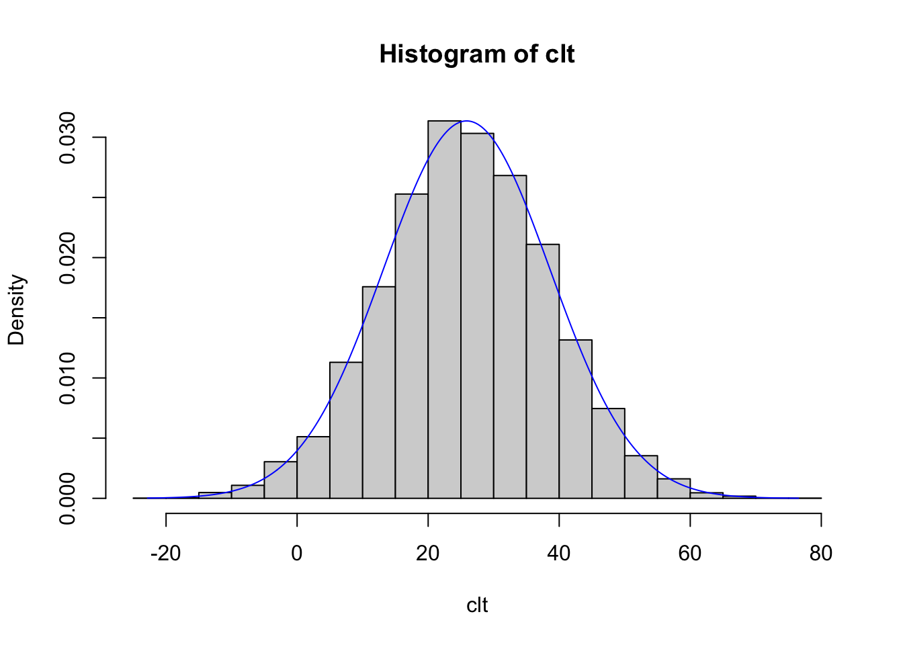
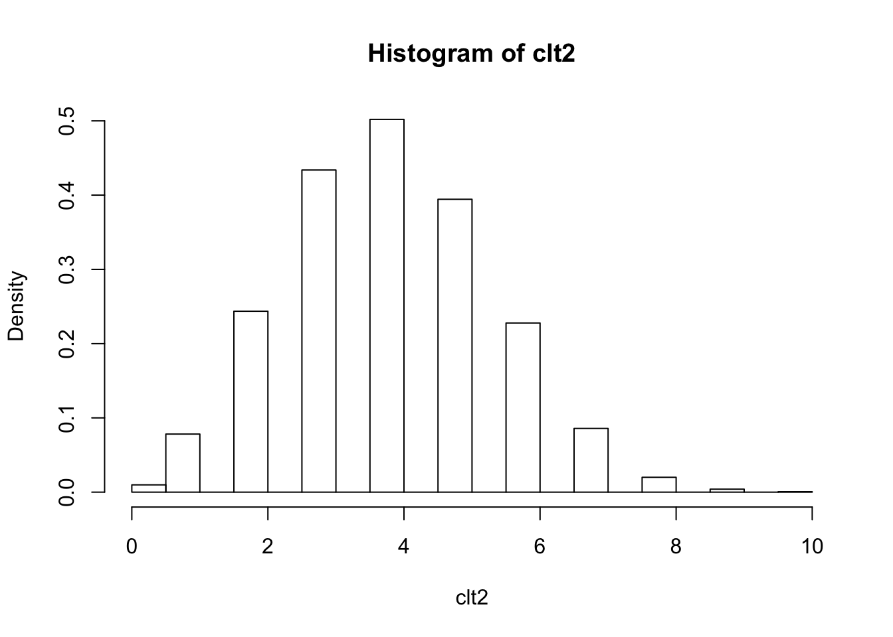
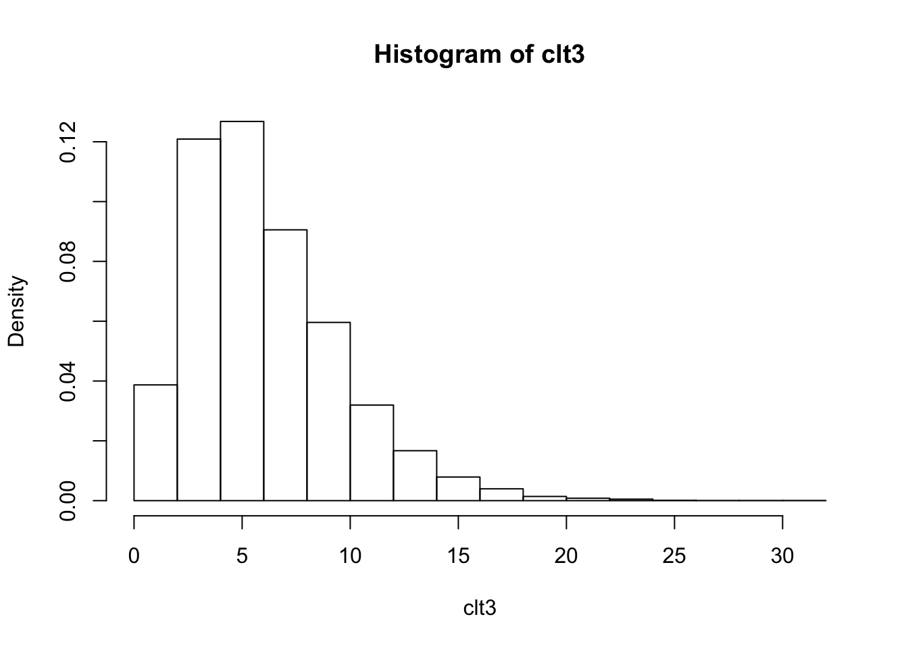
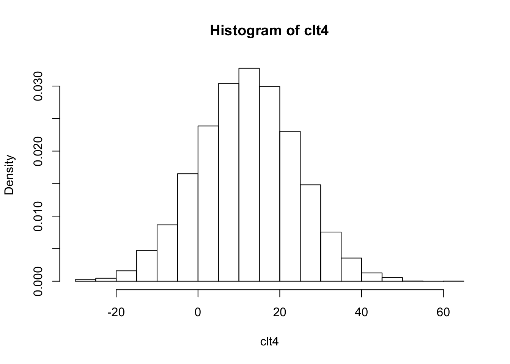
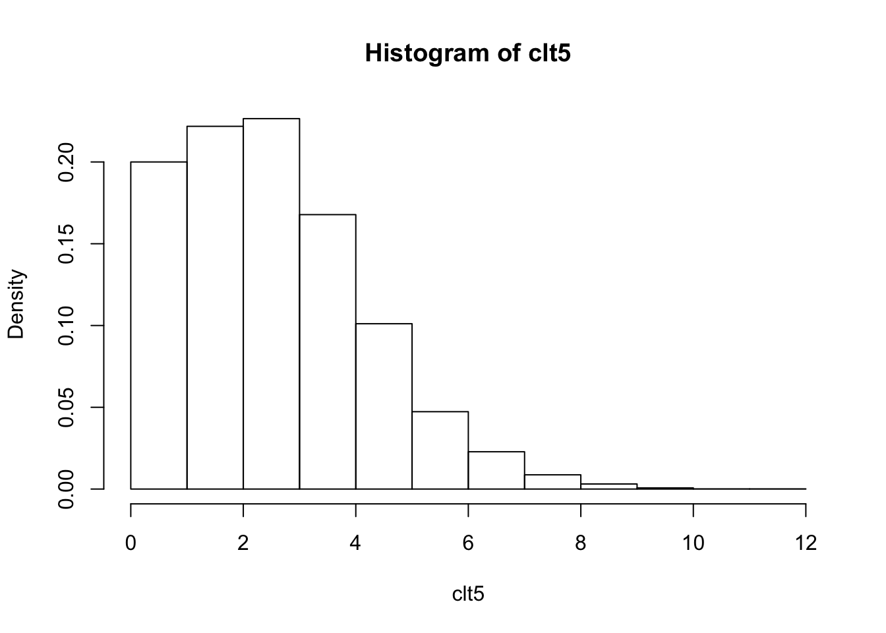
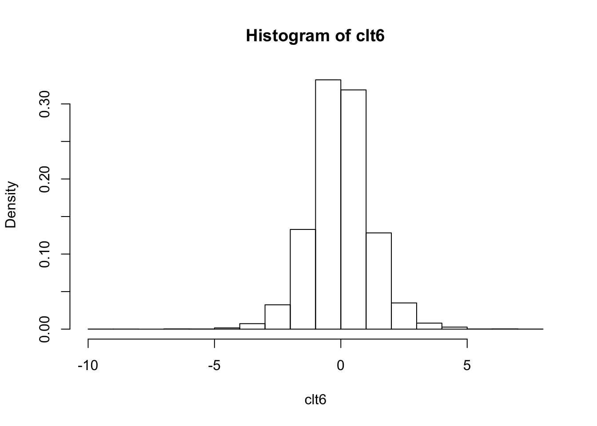
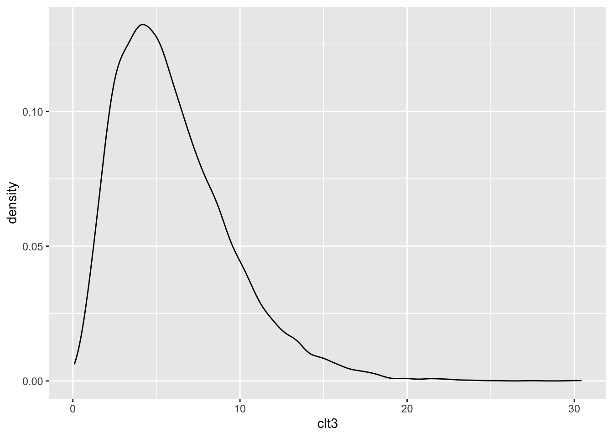
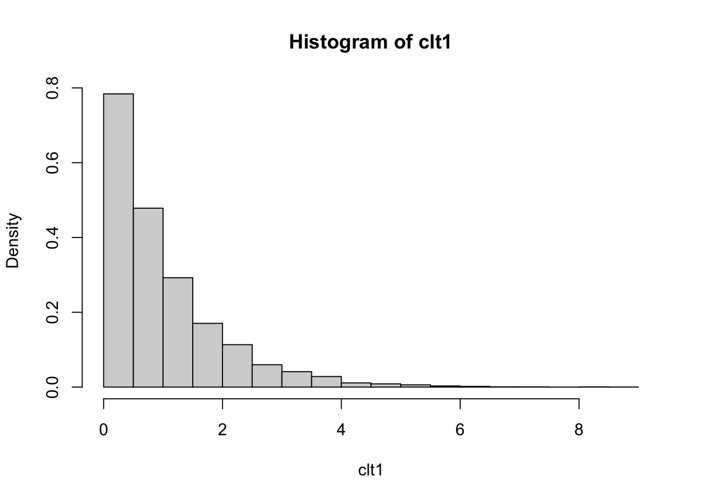

Chapter 11 Simulating data
I’ve just begun to explore R, and I realize that many of my questions could be improved with example data. Generating this kind of data takes practice, though.
Some good websites: https://clayford.github.io/dwir/dwr_12_generating_data.html
https://cran.r-project.org/web/packages/simstudy/vignettes/simstudy.html
https://aosmith.rbind.io/2018/08/29/getting-started-simulating-data/
Also, remember that R packages have a lot of great data.
11.1 Sample()
Starting with Clayford’s nice (and long page):
## [1] 5 4 2 1 3## [1] 18 18 9 16 12 10# bootstrap resampling: sampling the same number of items WITH replacement. The bootstrap method is a resampling technique used to estimate statistics on a population by sampling a dataset with replacement.
sample(dat, replace = TRUE) ## [1] 12 9 18 10 16 18## [1] "FL" "NV" "KS" "OH" "PA" "MO" "NY" "OR" "SC" "WA"## [1] 2# We can simulate the roll of a die 100 times by setting size=100 and
# replace=TRUE
sample(1:6, size=100, replace=TRUE)## [1] 5 1 3 2 3 5 2 3 2 1 2 2 4 2 1 3 1 6 5 5 6 2 3 1 4 2 1 2 3 4 1 4 5 1 3 4 5
## [38] 6 1 6 6 2 2 4 2 1 4 1 3 4 5 5 5 4 6 3 2 1 2 5 6 4 3 5 4 3 6 5 5 6 4 2 6 4
## [75] 4 2 5 3 4 2 5 1 1 1 3 5 5 1 1 2 6 4 5 5 5 5 4 4 1 3# sample produces a vector, so we can manipulate it as we would any other
# vector. For example, simulate a 100 die rolls and tally up the totals using
# table() and prop.table():
table(sample(1:6, size=100, replace=TRUE))##
## 1 2 3 4 5 6
## 15 22 11 17 18 17##
## 1 2 3 4 5 6
## 0.14 0.09 0.24 0.17 0.19 0.17##
## AK AL AR AZ CA CO CT DE FL GA HI IA ID IL IN KS KY LA MA MD ME MI MN MO MS MT
## 19 20 22 20 22 17 15 21 10 22 18 13 20 24 15 31 21 28 12 21 13 18 12 19 13 27
## NC ND NE NH NJ NM NV NY OH OK OR PA RI SC SD TN TX UT VA VT WA WI WV WY
## 23 23 20 28 20 26 20 20 18 16 21 20 23 13 26 29 21 20 24 18 22 21 18 17##
## AK AL AR AZ CA CO CT DE FL GA HI IA ID
## 0.032 0.022 0.023 0.018 0.016 0.026 0.015 0.019 0.015 0.013 0.021 0.017 0.029
## IL IN KS KY LA MA MD ME MI MN MO MS MT
## 0.020 0.021 0.018 0.027 0.024 0.018 0.015 0.032 0.020 0.020 0.028 0.020 0.019
## NC ND NE NH NJ NM NV NY OH OK OR PA RI
## 0.021 0.015 0.022 0.017 0.023 0.014 0.014 0.024 0.013 0.018 0.024 0.023 0.022
## SC SD TN TX UT VA VT WA WI WV WY
## 0.016 0.022 0.028 0.017 0.021 0.013 0.022 0.017 0.014 0.018 0.014##
## Attaching package: 'magrittr'## The following object is masked from 'package:purrr':
##
## set_names## The following object is masked from 'package:tidyr':
##
## extract## .
## 1 2 3 4 5 6
## 0.19 0.20 0.20 0.10 0.17 0.14## [1] 3## [1] 7# simulate rolling two dice 100 times by updating the sample "space"
sample(2:12, size=100, replace=TRUE)## [1] 12 12 3 12 7 4 2 8 3 9 9 9 4 9 4 11 11 4 11 10 12 2 4 12 9
## [26] 3 12 5 9 12 7 7 4 11 5 6 7 6 4 4 3 9 11 5 7 3 11 9 3 8
## [51] 3 8 12 12 5 12 4 8 4 11 4 10 6 9 4 6 8 12 5 9 5 10 6 11 11
## [76] 3 10 11 12 11 11 11 10 12 4 5 2 2 7 5 2 9 7 3 4 11 7 8 3 4## [1] 0.09311.2 replicate()
We can use the replicate() function to replicate samples. The replicate() function allows you to replicate an expression as many times as you specify. The basix syntax is replicate(n, expr) where n is the number of replications and expr is the expression you want to replicate.
# Roll 2 dice and keep the largest number, 10,000 times:
rolls <- replicate(n=1e5, expr = max(sample(1:6, size=2, replace=TRUE)))
# calculate proportions:
prop.table(table(rolls))## rolls
## 1 2 3 4 5 6
## 0.02787 0.08357 0.14052 0.19263 0.25027 0.3051411.3 sample() revisited
The sample function also has a prob argument that allows you to assign probabilities to your items. For example to simulate the flip of a loaded coin, with Tails having probability 0.65:
## flips
## H T
## 0.328 0.672Coins are nice, but we can also use sample to generate practical data, for example males and females. A web site says UVa has 11,632 female students and 10,353 male students as of Fall 2015.
## [1] 0.53 0.47Note how elegantly this answers a basic question. Nice!
We can generate a fake random sample of 500 UVa students with a weighted sampling scheme like so:
students <- sample(c("female","male"), 500, replace=TRUE, prob = c(0.53, 0.47))
prop.table(table(students))## students
## female male
## 0.54 0.46When used with subsetting brackets, sample() can be used to create training and test sets. For example, say we want to build some sort of predictive model using our training data. We may want to use half our data to build the model and then use the other half to evaluate its performance.
train <- sample(nrow(iris), size= nrow(iris)/2)
# train is a random sample of numbers from 1 - 365. We can treat these like row numbers.
irisTrain <- iris[train,]
irisTest <- iris[-train,]
# confirm no intersection
dplyr::intersect(irisTrain, irisTest) ## Sepal.Length Sepal.Width Petal.Length Petal.Width Species
## 1 5.8 2.7 5.1 1.9 virginica11.4 generating fixed levels ————————————————-
Often generating data means creating a series of fixed levels, such as 10 males and 10 females. The rep() function can be useful for this. Below we replicate 10 each of “M” and “F”:
## [1] "M" "M" "M" "M" "M" "M" "M" "M" "M" "M" "F" "F" "F" "F" "F" "F" "F" "F" "F"
## [20] "F"## [1] "M" "F" "M" "F" "M" "F" "M" "F" "M" "F" "M" "F" "M" "F" "M" "F" "M" "F" "M"
## [20] "F"## [1] "M" "F" "M" "F" "M" "F" "M" "F" "M" "F" "M" "F" "M" "F" "M"## [1] "M" "F" "M" "F" "M" "F" "M" "F" "M" "F" "M" "F" "M" "F" "M"# Notice that all these generated a character vector. To use as a "factor", we would need to wrap it in the factor() function.
factor(rep(c("M","F"), each=10))## [1] M M M M M M M M M M F F F F F F F F F F
## Levels: F M# A function specifically for creating factors is the gl() function. gl =
# "generate levels". Below we generate a factor with 2 levels of 10 each and
# labels of "M" and "F". Notice the result is a factor.
gl(n = 2, k = 10, labels = c("M","F"))## [1] M M M M M M M M M M F F F F F F F F F F
## Levels: M F# A more common occurence is combinations of fixed levels, say gender,
# education, and status. A function that helps create every combination of
# levels is expand.grid(). Below we generate every combination of the levels
# provided for gender, education, and status. Notice the first factors vary
# fastest.
expand.grid(gender=c("M","F"),
education=c("HS","College","Advanced"),
status=c("Single","Married","Divorced","Widowed"))## gender education status
## 1 M HS Single
## 2 F HS Single
## 3 M College Single
## 4 F College Single
## 5 M Advanced Single
## 6 F Advanced Single
## 7 M HS Married
## 8 F HS Married
## 9 M College Married
## 10 F College Married
## 11 M Advanced Married
## 12 F Advanced Married
## 13 M HS Divorced
## 14 F HS Divorced
## 15 M College Divorced
## 16 F College Divorced
## 17 M Advanced Divorced
## 18 F Advanced Divorced
## 19 M HS Widowed
## 20 F HS Widowed
## 21 M College Widowed
## 22 F College Widowed
## 23 M Advanced Widowed
## 24 F Advanced Widowed# Notice that creates a data frame that we can save:
DF <- expand.grid(gender=c("M","F"),
education=c("HS","College","Advanced"),
status=c("Single","Married","Divorced","Widowed"))
class(DF)## [1] "data.frame"Or imagine an experiment where 3 people throw 3 different kinds of paper airplanes, made of 3 paper types (3x3 = 9 planes), throwing each plane 8 times.
schedule <- expand.grid(thrower=c("Clay","Rod","Kevin"),
paper=c("18", "20", "24"),
design=c("a","b","c"),
rep=1:8)
# Randomize and drop the rep column. The sample(nrow(schedule)) code scrambles the numbers 1 through 216, which I then use to randomly shuffle the schedule of throws.
k <- sample(nrow(schedule))
schedule <- schedule[k,1:3]
head(schedule, n = 10)## thrower paper design
## 199 Clay 18 b
## 146 Rod 18 b
## 139 Clay 20 a
## 182 Rod 18 c
## 131 Rod 20 c
## 121 Clay 20 b
## 18 Kevin 24 b
## 186 Kevin 20 c
## 20 Rod 18 c
## 197 Rod 24 a# output to csv file for logging "distance flown" data
write.csv(schedule, file="throwLog.csv", row.names=FALSE)
rm(k, schedule)This is a great way to set up an experiment, but I’d like to also add data for the throw, based on interesting distributions (normal, etc.). How would I generate samples for each contestant that was based on slightly different distributions?
What sort of distribution? See this page to get a quick refresher on common distributions: https://www.analyticsvidhya.com/blog/2017/09/6-probability-distributions-data-science/.
Note also that ?distributions gives you the distributions in {stats}. Persevere for a time.
11.5 generating numerical sequences
## [1] 0 2 4 6 8 10## [1] 0.0 0.2 0.4 0.6 0.8 1.0 1.2 1.4 1.6 1.8 2.0 2.2 2.4 2.6 2.8
## [16] 3.0 3.2 3.4 3.6 3.8 4.0 4.2 4.4 4.6 4.8 5.0 5.2 5.4 5.6 5.8
## [31] 6.0 6.2 6.4 6.6 6.8 7.0 7.2 7.4 7.6 7.8 8.0 8.2 8.4 8.6 8.8
## [46] 9.0 9.2 9.4 9.6 9.8 10.0## [1] 1000 900 800 700 600 500 400 300 200 100 0# The seq() function has a length.out argument that allows you to specify the
# size of the vector you want to create. It automatically calculates the
# increment. We usually just abbreviate to length
seq(1, 10, length = 30)## [1] 1.000000 1.310345 1.620690 1.931034 2.241379 2.551724 2.862069
## [8] 3.172414 3.482759 3.793103 4.103448 4.413793 4.724138 5.034483
## [15] 5.344828 5.655172 5.965517 6.275862 6.586207 6.896552 7.206897
## [22] 7.517241 7.827586 8.137931 8.448276 8.758621 9.068966 9.379310
## [29] 9.689655 10.000000## [1] 1 2 3 4 5 6 7 8 9 10## [1] 10 9 8 7 6 5 4 3 2 1 0 -1 -2 -3 -4 -5 -6 -7 -8
## [20] -9 -10# When used with factors, the colon operator generates an interaction factor:
f1 <- gl(n = 2, k = 3); f1## [1] 1 1 1 2 2 2
## Levels: 1 2## [1] a a b b c c
## Levels: a b c## [1] 1:a 1:a 1:b 2:b 2:c 2:c
## Levels: 1:a 1:b 1:c 2:a 2:b 2:cThe last step seems akin to perfectly shuffling two decks of cards (the decks must be of equal length).
11.6 seq_along() and seq_len().
seq_along() returns the indices of a vector while seq_len(n) returns an integer vector of 1:n.
## [1] 1 2 3 4 5 6 7 8 9 10 11 12 13 14 15 16 17 18 19 20 21## [1] 1 2 3 4 5 6 7 8 9 10 11 12 13 14 15 16 17 18 19 20 21 22 23 24 25
## [26] 26 27 28 29 30 31 32 33 34 35 36 37 38 39 40 41 42 43 44 45 46 47 48 49 50## [1] 1 2 3 4 5 6 7 8 9 10 11 1211.7 generating random data from a probability distribution
A central idea in inferential statistics is that the distribution of data can often be approximated by a theoretical distribution. R provides functions for working with several well-known theoretical distributions, including the ability to generate data from those distributions. A common one is the rnorm() function which generates data from a Normal distribution.
In R, the functions for theoretical distributions take the form of dxxx, pxxx, qxxx and rxxx.
- dxxx is for the probability density/mass function (dnorm)
- pxxx is for the cumulative distribution function (pnorm)
- qxxx is for the quantile function (qnorm)
- rxxx is for random variate generation (rnorm)
For random variate generation we’re interested in the rxxx variety.
11.8 Normal distribution:
## [1] 95.66993 96.93959 93.87119 98.15503 108.59453 99.28320 94.30730
## [8] 102.50581 93.27080 98.6535311.9 Binomial distribution:
# 10 random draws from b(1,0.5)
# AKA, 10 coin flips (size is the number of trials)
rbinom(n = 10, size = 1, prob = 0.5)## [1] 1 1 1 0 1 1 1 0 1 0# 10 random draws from b(1,0.8)
# AKA, 10 coin flips with a coin loaded Heads (or Tails) 80% of time
rbinom(n = 10, size = 1, prob = 0.8)## [1] 1 1 1 1 1 0 1 1 1 0# 10 random draws from b(10,0.5)
# AKA, 10 results of 10 coin flips
rbinom(n = 10, size = 10, prob = 0.5)## [1] 5 6 4 2 5 3 5 7 6 3# We can use a binomial distribution to simulate dichotmous answers such as
# Yes/No or success/fail. Simulate a vector of responses where respondents are 65% likely to say Yes (1) versus No (0)
rbinom(n = 10, size = 1, prob = 0.65)## [1] 1 1 0 1 1 1 1 0 1 0## [1] "Y" "Y" "Y" "N" "Y" "Y" "Y" "Y" "Y" "Y"11.10 Uniform distribution
## [1] 60.326980 73.283454 10.113435 61.390940 25.128734 59.507974 92.516590
## [8] 1.090762 1.082432 26.157247# A uniform distribution can be good for random sampling. Let's say we want to sample about 10% of iris data:
k <- runif(nrow(iris),0,1) # [0,1] interval is default
sbSamp <- iris[k < 0.1, ] # sample about 10% of rows
dim(sbSamp)## [1] 17 5# dplyr does this as well without the need for runif; and it's precise in its
# sampling fraction.
sbSamp <- dplyr::sample_frac(iris, 0.1) # sample exactly 10% of rows
dim(sbSamp)## [1] 15 511.11 Sampling from multiple distributions (building in a “difference”)
The arguments to rxxx functions can take vectors! This means we can use one function call to generate draws from multiple distributions.
## [1] 3.4780530 100.0473848 -0.9160729 126.5839546 2.2481878 31.5422218
## [7] 4.2862139 124.8887630 0.5034521 86.9648960# 30 random draws, 10 each from N(10,4), N(90,4) and N(400,4)
rnorm(30, mean = rep(c(10,90,400),each=10), sd = 4)## [1] 7.293508 19.639453 3.924593 8.225864 7.175903 7.391683
## [7] 6.591222 8.746446 12.196931 13.198499 99.520178 86.514731
## [13] 90.376221 93.506773 90.063370 87.698771 91.558452 81.415876
## [19] 83.241770 84.475469 395.164557 403.326198 402.503808 397.540535
## [25] 406.222133 399.418309 396.399917 400.717691 394.538219 399.473333# 100 random draws, 50 each from b(5,0.5) and b(50,0.5)
rbinom(n = 100, size = rep(c(5,50),each=50), prob = 0.5)## [1] 3 3 1 1 1 2 1 2 3 2 1 2 5 4 2 3 2 4 3 3 1 4 4 4 4
## [26] 2 3 2 3 1 1 1 1 4 2 3 3 3 4 2 3 4 2 3 3 1 0 2 2 5
## [51] 26 19 22 29 23 29 23 22 26 35 26 23 27 28 24 27 27 26 26 24 27 24 28 16 21
## [76] 23 28 20 22 25 28 22 25 30 27 25 29 29 24 28 25 22 25 21 30 28 31 28 25 20# Combined with matrix(), one can generate "multiple" random samples from a
# distribution. For example, draw 5 random samples of size 10 from a N(10,1):
matrix(rnorm(10*5,10,1),ncol=5)## [,1] [,2] [,3] [,4] [,5]
## [1,] 11.332861 11.400865 8.769827 8.810924 9.029461
## [2,] 10.035283 8.433844 9.381177 9.525557 9.398117
## [3,] 10.496715 11.290449 8.971141 9.706275 10.434732
## [4,] 9.517007 9.185832 12.107094 9.597588 9.597808
## [5,] 10.247553 9.482852 9.743374 9.241108 9.847012
## [6,] 11.858210 10.849336 9.445144 8.948363 9.505161
## [7,] 9.546841 10.345423 9.039206 9.142356 10.760739
## [8,] 9.039082 8.674918 11.558537 10.425124 9.811335
## [9,] 9.518707 9.591150 10.619315 11.824144 9.667609
## [10,] 9.207467 8.949413 9.771530 9.659081 11.109012Note that in the last example, we technically drew one sample of size 50 and then laid it out in a 10x5 matrix.
11.12 The good stuff: building in a difference based on a categorical variable
Using ifelse() we can generate different data based on a TRUE/FALSE condition. Let’s say we have treated and untreated subjects. I’d like to generate Normal data that differs based on the treatment.
trtmt <- sample(c("Treated","Untreated"), size = 20, replace = TRUE)
ifelse(trtmt=="Treated", yes = rnorm(20, 10, 1), no = rnorm(20, 20, 1))## [1] 21.015208 10.902627 9.142717 9.696938 9.683289 20.463172 20.236671
## [8] 19.549284 19.558152 20.102505 7.803139 8.879669 9.410191 10.798966
## [15] 9.068286 10.657873 20.217372 11.767911 9.931248 11.132092Notice we have to make the length of the yes/no arguments the SAME LENGTH as the trtmt==“Treated” logical vector! What happens if we use rnorm(n=1,…)?
# What about more than two groups?
n <- 200
trtmt <- sample(LETTERS[1:6], size = n, replace = TRUE)
# Say we want to generate differnt Normal data for each group. One way is to do a for-loop with multiple if statements:
val <- numeric(n) # empty vector
for(i in seq_along(trtmt)){
if(trtmt[i]=="A") val[i] <- rnorm(1, 10, 2)
else if(trtmt[i]=="B") val[i] <- rnorm(1, 20, 4)
else if(trtmt[i]=="C") val[i] <- rnorm(1, 30, 6)
else if(trtmt[i]=="D") val[i] <- rnorm(1, 40, 8)
else if(trtmt[i]=="E") val[i] <- rnorm(1, 50, 10)
else val[i] <- rnorm(1, 60, 12)
}
val## [1] 11.576376 9.465103 18.275351 42.031274 45.563227 41.332462 24.833032
## [8] 42.691672 40.744736 49.839709 48.709138 9.140163 53.761520 7.556632
## [15] 55.170821 45.567743 19.882858 9.441267 29.355899 21.854935 41.837018
## [22] 20.847891 10.577338 53.994109 11.756548 7.220519 35.605797 20.602421
## [29] 22.494072 23.460312 77.272943 8.083332 50.191954 44.710898 35.851786
## [36] 15.227514 36.406731 7.629116 22.142077 46.214166 29.967466 57.336725
## [43] 11.565971 66.447415 10.287138 11.361467 14.925814 40.228507 36.535038
## [50] 12.579261 79.615106 63.708583 36.752670 7.442945 28.897760 23.752219
## [57] 56.837868 47.786744 8.976672 37.284647 23.177804 19.440649 12.169583
## [64] 73.423544 28.170850 22.354030 28.736339 42.352745 8.309049 45.972741
## [71] 36.180210 71.510068 48.076684 23.123753 44.510092 32.208610 17.285662
## [78] 51.708670 38.888889 40.239945 19.856443 51.841459 11.116210 10.201142
## [85] 10.731335 15.530799 25.867331 13.562846 78.238912 71.711494 21.023212
## [92] 53.096569 34.340418 42.060234 22.412097 47.359702 14.419714 50.694225
## [99] 23.365908 23.004778 20.989515 66.045645 31.510570 31.206626 46.958690
## [106] 68.825559 21.832495 28.566367 38.870232 27.790953 47.581605 56.614140
## [113] 11.058591 18.954572 54.668096 59.020574 39.165581 11.091255 48.491145
## [120] 64.562534 54.176034 42.888166 60.696432 7.418108 23.238997 9.421419
## [127] 73.738707 26.924804 14.870279 13.724914 9.337480 25.781511 68.176093
## [134] 14.270560 52.080972 71.493883 35.365105 64.200543 44.373374 44.819049
## [141] 59.315340 36.343243 36.255372 39.430310 31.269215 76.636012 19.782770
## [148] 8.641738 27.402907 54.055081 23.951215 8.191447 37.277908 52.530782
## [155] 39.701506 21.416825 59.400033 69.243008 49.193184 11.718405 53.574984
## [162] 33.507361 39.308784 52.606870 9.253777 63.638915 11.232726 33.299307
## [169] 32.582860 25.835494 23.319721 73.039736 24.149536 10.244137 8.794697
## [176] 21.474519 12.588297 9.987547 26.512094 12.781433 41.539991 8.606029
## [183] 70.952206 24.017570 15.773603 47.551492 43.257415 47.640365 37.928899
## [190] 36.086770 56.328465 60.242036 20.711093 12.439874 31.923822 35.771169
## [197] 47.532915 22.668178 30.793951 49.884352A more R-like way would be to take advantage of vectorized functions. First create a data frame with one row for each group and the mean and standard deviations we want to use to generate the data for that group.
## g mean sd
## 1 A 10 2
## 2 B 20 4
## 3 C 30 6
## 4 D 40 8
## 5 E 50 10
## 6 F 60 12dat is currently a petite little dataframe of 6 rows.
Now sample the row numbers (1 - 6) WITH replacement. We can use these to randomly sample the data frame rows.
ASIDE: Recall that we can repeatedly call a row or element using subsetting brackets. For example, call the first row of iris 5 times:
## Sepal.Length Sepal.Width Petal.Length Petal.Width Species
## 1 5.1 3.5 1.4 0.2 setosa
## 1.1 5.1 3.5 1.4 0.2 setosa
## 1.2 5.1 3.5 1.4 0.2 setosa
## 1.3 5.1 3.5 1.4 0.2 setosa
## 1.4 5.1 3.5 1.4 0.2 setosaLet’s exploit that to randomly sample with replacement our data frame of groups:
## 'data.frame': 200 obs. of 3 variables:
## $ g : Factor w/ 6 levels "A","B","C","D",..: 5 6 1 5 1 5 4 2 6 5 ...
## $ mean: num 50 60 10 50 10 50 40 20 60 50 ...
## $ sd : num 10 12 2 10 2 10 8 4 12 10 ...# Now generate our data for each group using ONE call to rnorm.
dat$vals <- rnorm(n, mean=dat$mean, sd=dat$sd)
head(dat)## g mean sd vals
## 5 E 50 10 53.555407
## 6 F 60 12 58.975390
## 1 A 10 2 9.436031
## 5.1 E 50 10 66.783189
## 1.1 A 10 2 11.565873
## 5.2 E 50 10 43.187463This is pretty neat. We go from one little dataframe to a larger one in a few lines of code. Mean and SD can be varied by the class, “g” in this case.
11.13 A demonstration of the Central Limit Theorem
The Central Limit Theorem states that the sum of a large number of independent random variables will be approximately normally distributed almost regardless of their individual distributions. We can demonstrate this using various rxxx functions.
# sum 6 values from 6 different distributions (sample size = 6)
n <- 1e4 # simulate 1000 times
clt <- rexp(n, rate = 1) + rbinom(n,10,0.4) + rchisq(n,df = 6) +
rnorm(n, 12, 12) + rpois(n, lambda = 3) + rt(n, df = 7)
hist(clt, freq=FALSE)
# overlay a normal density curve
X <- seq(min(clt),max(clt),length = 500) # x
Y <- dnorm(X, mean = mean(clt), sd = sd(clt)) # f(x) = dnorm
lines(X,Y,type = "l", col="blue") # plot (x,y) coordinates as a "blue" line ("l")
Let’s unpack some of this:






# All of this base R graphing is clunky and doesn't lend itself to modification as well as ggplot() figures.
library(tidyverse)
df <- data.frame(clt1, clt2, clt3, clt4, clt5, clt6)
df %>% ggplot(aes(clt3)) +
geom_histogram(bins = 30)

11.14 Overlaying normal curve on histogram
The following solution was on StackOverflow at https://stackoverflow.com/questions/6967664/ggplot2-histogram-with-normal-curve
set.seed(1)
df1 <- data.frame(PF = 10*rnorm(1000))
ggplot(df1, aes(x = PF)) +
geom_histogram(aes(y =..density..),
breaks = seq(-40, 40, by = 5),
colour = "black",
fill = "white") +
stat_function(fun = dnorm, args = list(mean = mean(df1$PF), sd = sd(df1$PF)), color = "blue") 
From the {ggplot2} help: “This stat makes it easy to superimpose a function on top of an existing plot. The function is called with a grid of evenly spaced values along the x axis, and the results are drawn (by default) with a line.”
Note how stat_function() lends itself to quick addition: simply feed the correct fun and args to the function.
Now accomplish this for clt3
ggplot(df, aes(x = clt3)) +
geom_histogram(aes(y =..density..),
breaks = seq(0, 30, by = 1),
colour = "black",
fill = "white") +
stat_function(fun = dchisq, args = list(df = 6), color = "blue") +
labs(title = "chi-squared distribution")
Note how the args in dchisq includes only the df = 6. No mean needs to be calculated (as in dnorm).
Now accomplish this for clt1
ggplot(df, aes(x = clt1)) +
geom_histogram(aes(y =..density..),
breaks = seq(0, 8, by = .5),
colour = "black",
fill = "white") +
stat_function(fun = dexp, args = list(rate = 1), color = "blue") +
labs(title = "exponential distribution")